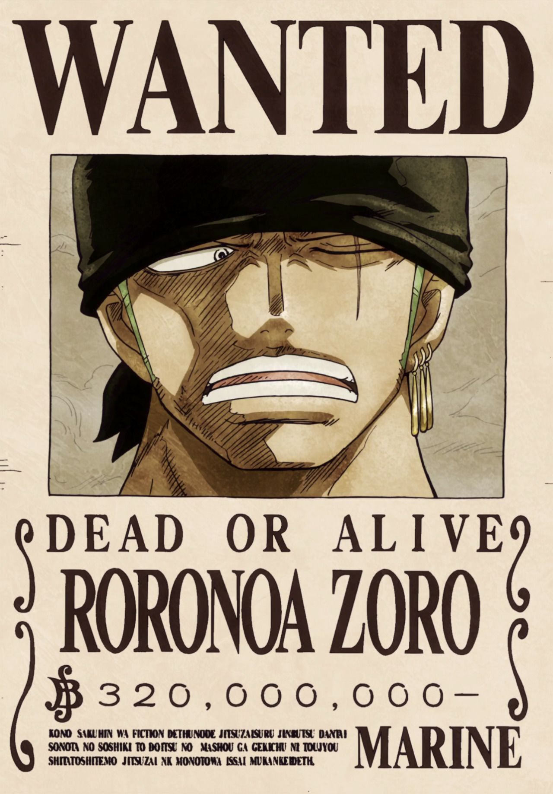
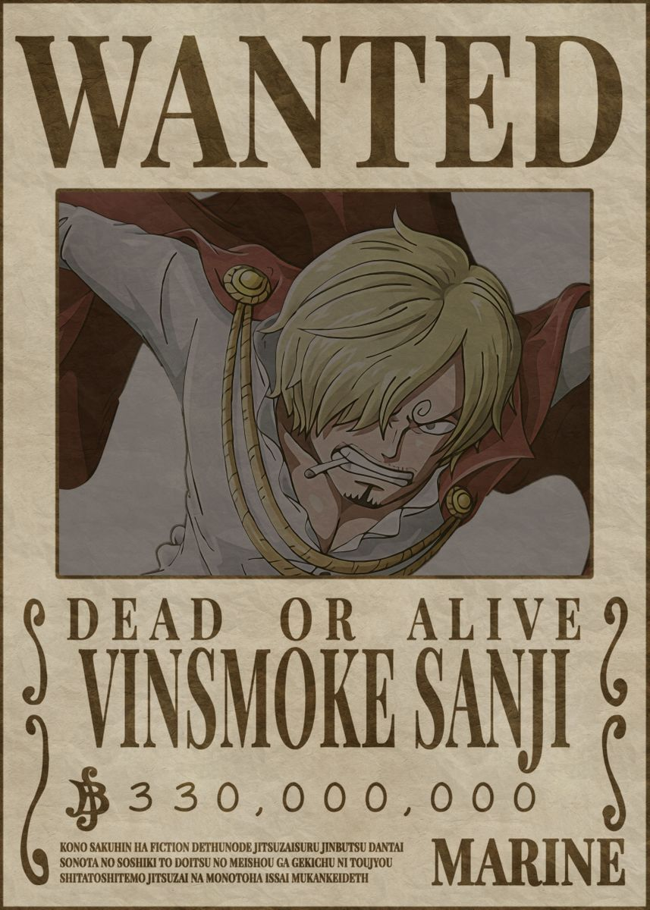
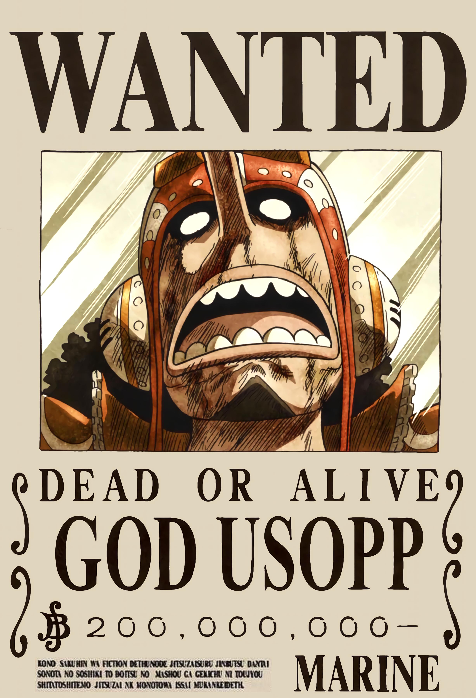
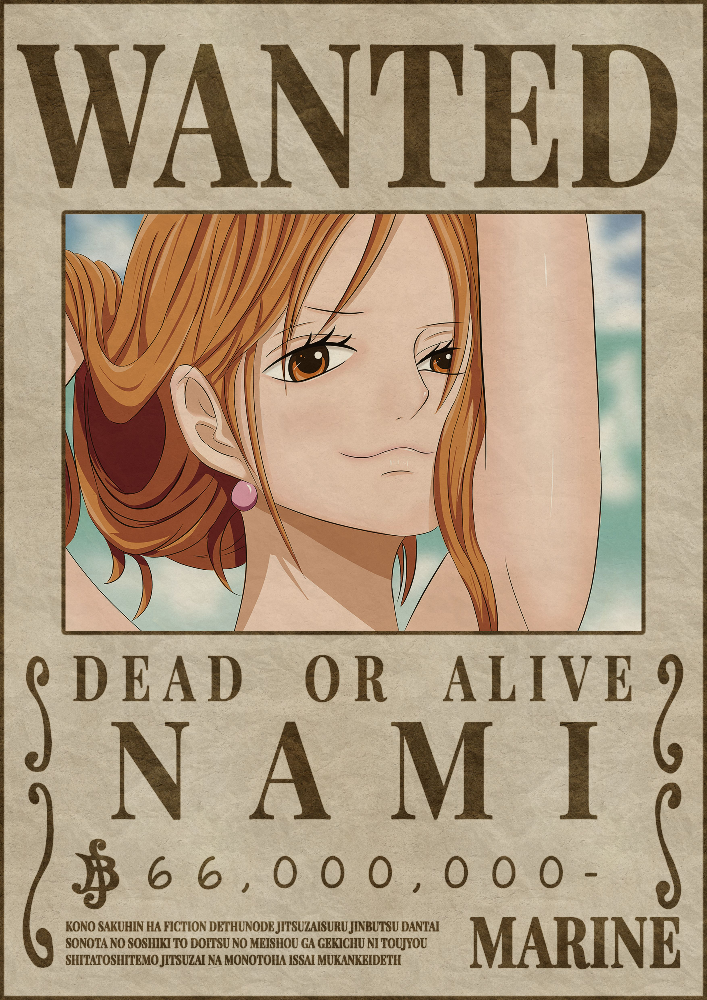
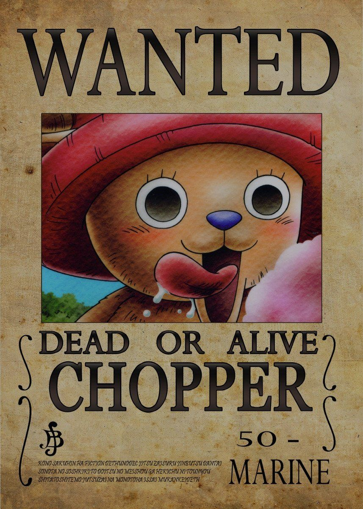
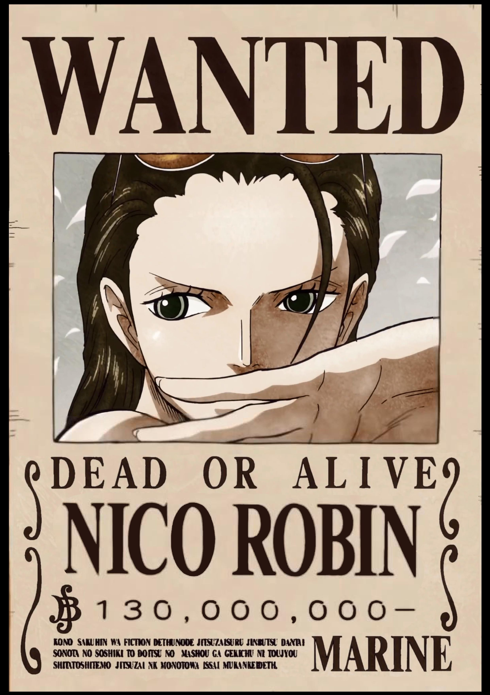
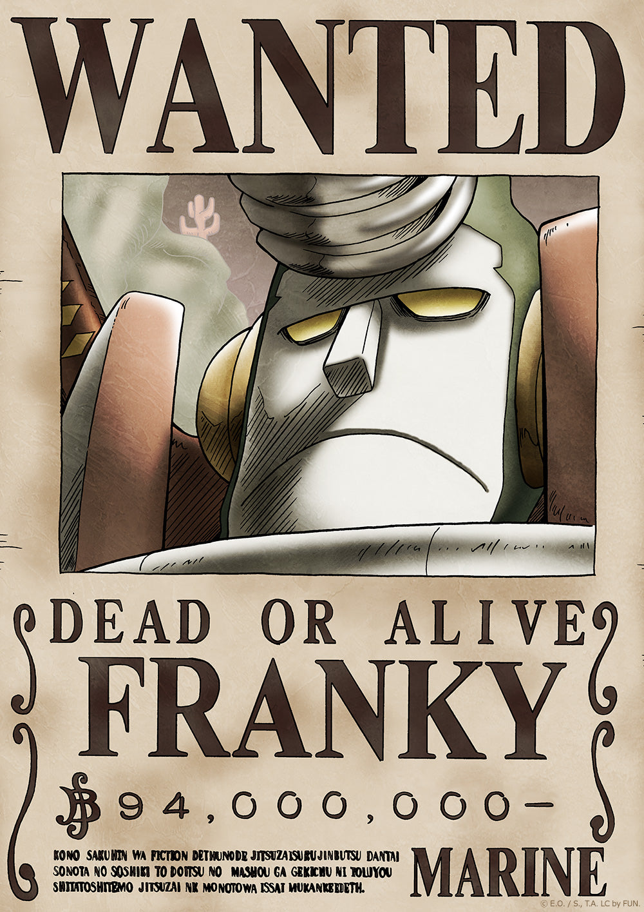
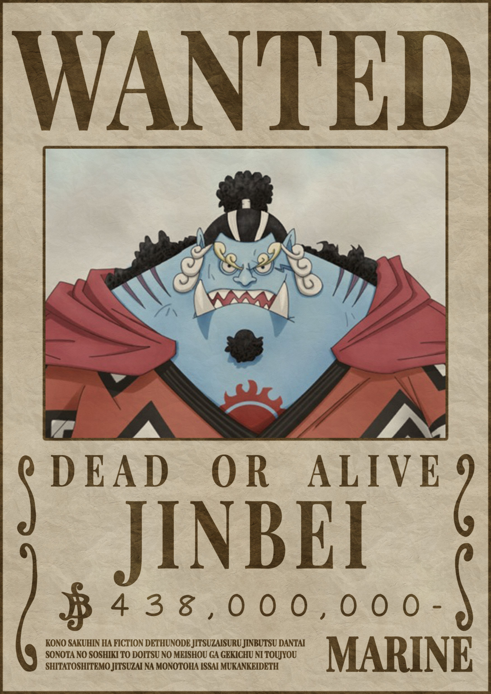

One Piece (stylized in all caps) is a Japanese manga series written and illustrated by Eiichiro Oda. It has been serialized in Shueisha's shōnen manga magazine Weekly Shōnen Jump since July 1997, with its individual chapters compiled into 105 tankōbon volumes as of March 2023. The story follows the adventures of Monkey D. Luffy and his crew, the Straw Hat Pirates, where he explores the Grand Line in search of the mythical treasure known as the "One Piece" in order to become the next King of the Pirates. The manga spawned a media franchise, having been adapted into a festival film produced by Production I.G, and an anime series produced by Toei Animation, which began broadcasting in 1999. Additionally, Toei has developed fourteen animated feature films, one original video animation, and thirteen television specials. Several companies have developed various types of merchandising and media, such as a trading card game and numerous video games. The manga series was licensed for an English language release in North America and the United Kingdom by Viz Media and in Australia by Madman Entertainment. The anime series was licensed by 4Kids Entertainment for an English-language release in North America in 2004 before the license was dropped and subsequently acquired by Funimation in 2007.
One Piece has received praise for its storytelling, world-building, art, characterization, and humor. It has received many awards and is ranked by critics, reviewers, and readers as one of the best manga of all time. As of August 2022, it had over 516.6 million copies in circulation in 61 countries and regions worldwide, making it the best-selling manga series in history, and the best-selling comic series printed in book volume. Several volumes of the manga have broken publishing records, including the highest initial print run of any book in Japan. In 2015 and 2022, One Piece set the Guinness World Record for "the most copies published for the same comic book series by a single author". It was the best-selling manga for eleven consecutive years from 2008 to 2018, and is the only manga that had an initial print of volumes of above 3 million continuously for more than 10 years, as well as the only that had achieved more than 1 million copies sold in all of its over 100 published tankōbon volumes. One Piece is the only manga whose volumes have ranked first every year in Oricon's weekly comic chart existence since 2008.
Main Characters
1.Monkey D. Luffy

Monkey D. Luffy is a fictional character and the protagonist of the popular manga and anime series "One Piece," created by Eiichiro Oda. Luffy is a young pirate who aspires to become the Pirate King and find the ultimate treasure known as One Piece, which will grant him the title of the Pirate King. Luffy is known for his distinct appearance, characterized by his straw hat, black hair, and scar under his left eye. He possesses a rubber-like body due to eating the Gum-Gum Fruit (Gomu Gomu no Mi), a Devil Fruit that granted him the ability to stretch his body like rubber but made him unable to swim. Luffy is the captain of the Straw Hat Pirates, a crew of diverse individuals who share his dream of finding One Piece. Throughout the series, he travels through the Grand Line, a dangerous and mysterious sea, facing numerous challenges and battles against other pirates, the World Government, and various other adversaries. Luffy is known for his carefree and often naive personality, his love for adventure, and his unwavering loyalty to his friends. He has a strong sense of justice and a determination to protect those dear to him. Despite his reckless and impulsive nature, Luffy has a unique ability to inspire and unite people, often forming alliances with other pirates and groups. Throughout his journey, Luffy gains powerful allies and develops new abilities, such as Haki, a form of spiritual energy that allows him to fight against Devil Fruit users and conquer the sea. Luffy's ultimate goal of becoming the Pirate King and finding One Piece drives him to overcome seemingly insurmountable obstacles and face powerful enemies. Monkey D. Luffy has become one of the most iconic and beloved characters in anime and manga, capturing the imagination of fans around the world with his adventurous spirit, resilience, and unwavering pursuit of his dreams.
2.Roronoa Zoro
Roronoa Zoro, often referred to as "Pirate Hunter Zoro," is a fictional character in the manga and anime series "One Piece" created by Eiichiro Oda. Zoro is a swordsman and one of the main characters of the series, serving as a member of the Straw Hat Pirates and the crew's combat specialist. Zoro is recognized for his distinctive appearance, including his green hair, muscular build, and three-sword style of combat. He wields three swords simultaneously, with one in each hand and one in his mouth, using a style known as Santoryu or Three-Sword Style. His dedication to his swordsmanship and his pursuit of becoming the world's greatest swordsman are central aspects of his character. Zoro initially joins the Straw Hat Pirates after being saved by their captain, Monkey D. Luffy. He shares a similar dream with Luffy, aiming to achieve his goal of becoming the strongest swordsman in the world. Zoro is known for his stoic and serious demeanor, often displaying a calm and focused attitude during battles. Despite his tough exterior, Zoro is a loyal and dependable ally who values his friends and crewmates. He is known for his strong sense of justice and honor, willing to sacrifice himself to protect those he cares about. Zoro's loyalty and dedication are exemplified by his unwavering commitment to his captain and crew. Throughout the series, Zoro engages in numerous intense battles, demonstrating his exceptional swordsmanship skills and his incredible strength. He constantly pushes his limits and trains rigorously to become stronger, often taking on formidable opponents. Zoro's determination, resilience, and unwavering spirit make him a formidable fighter and a vital asset to the Straw Hat crew. Zoro's character development also involves his personal growth and interactions with his crewmates. While initially aloof and solitary, he gradually develops strong bonds and a deep camaraderie with his fellow Straw Hat Pirates, particularly with Luffy. Despite occasional clashes with other crew members, Zoro values their friendships and demonstrates his loyalty and support in critical moments. Overall, Roronoa Zoro is a beloved character in the "One Piece" series, known for his exceptional swordsmanship, unyielding determination, and loyalty to his friends. His quest to become the world's greatest swordsman and his role within the Straw Hat crew contribute significantly to the ongoing narrative and adventures of "One Piece."
3.Vinsmoke Sanji
Sanji, also known as "Black Leg Sanji," is a fictional character in the manga and anime series "One Piece" created by Eiichiro Oda. He is one of the main characters and a member of the Straw Hat Pirates, serving as the crew's cook. Sanji is recognized for his distinct appearance, often wearing a black suit, smoking a cigarette, and having his left eye covered by his signature curly eyebrow. He is known for his exceptional culinary skills, and his cooking abilities are highly valued by his crewmates. Sanji's character is characterized by his love for women, chivalry, and his role as the "gentleman" of the crew. He often flirts with women and has a strong sense of courtesy, always treating ladies with respect and protecting them from harm. However, his weakness for women sometimes gets him into trouble or compromises his focus during battles. Sanji specializes in a unique fighting style called "Black Leg Style," which focuses on powerful kicks and agile acrobatics. His legs are incredibly strong, allowing him to deliver devastating kicks with incredible speed and precision. He rarely uses his hands in combat, saving them for cooking and other tasks. Despite his womanizing tendencies and flirtatious nature, Sanji is a caring and selfless individual. He often puts the well-being of his friends and crewmates above his own, willingly sacrificing himself to protect them. Sanji's loyalty to his crew is unwavering, and he plays a vital role in supporting and nourishing the Straw Hat Pirates both in battles and with his culinary expertise. Sanji's backstory reveals his troubled childhood and his time spent in the "Baratie," a floating restaurant and battleground where he honed his cooking and combat skills under the tutelage of the head chef, Zeff. This backstory contributes to his strong work ethic, determination, and commitment to excellence in both cooking and fighting. Throughout the series, Sanji engages in numerous battles, displaying his incredible speed, agility, and mastery of martial arts. His fights often showcase his creativity and adaptability in combat, using his environment and cooking utensils as weapons. Sanji's character development also involves his interactions with his crewmates, particularly his complicated relationship with the navigator Nami and his rivalry with the swordsman Zoro. Despite occasional conflicts, Sanji is a valued member of the Straw Hat crew, and his cooking and fighting skills contribute significantly to their adventures. Overall, Sanji is a beloved and charismatic character in the "One Piece" series, known for his culinary talents, chivalry, and kick-based fighting style. His dedication to his friends, unwavering loyalty, and his unique personality make him an integral part of the Straw Hat Pirates and the overall narrative of "One Piece."
4.God Usopp
Usopp, also known as "Sogeking" and "God Usopp," is a fictional character in the manga and anime series "One Piece" created by Eiichiro Oda. He is one of the main characters and a member of the Straw Hat Pirates, serving as the crew's sniper and marksman. Usopp is recognized for his distinct appearance, often wearing a green hat and goggles, along with a long nose that he frequently hides under various disguises. He is known for his exceptional marksmanship skills, using his slingshot, called the "Kabuto," to attack enemies from a distance. Usopp's character is characterized by his vivid imagination and tendency to exaggerate stories. He often creates elaborate lies or tall tales to impress or deceive others. However, underneath his bravado, Usopp is a kind-hearted and loyal individual who deeply cares for his friends and family. Initially, Usopp is portrayed as a cowardly and fearful character, often avoiding direct confrontations and preferring to strategize from a distance. However, as the series progresses, he undergoes significant character development, gaining courage and becoming more confident in his abilities. Usopp's role within the Straw Hat crew is not limited to his marksmanship skills. He also serves as the crew's shipwright, utilizing his craftsmanship and resourcefulness to repair and improve the Thousand Sunny, the crew's ship. Additionally, Usopp often acts as the comic relief of the group, providing comedic moments and lightening the mood during intense situations. Usopp's backstory reveals his humble origins as a village boy from Syrup Village. He comes from a long line of snipers and inherits his marksmanship skills from his father, Yasopp, who is a member of the Red Hair Pirates. Usopp's desire to become a brave warrior and protect his village motivates him to join the Straw Hat Pirates and embark on his adventures. Throughout the series, Usopp engages in numerous battles, utilizing his slingshot and various gadgets to support his crewmates and attack enemies. His sharpshooting skills, combined with his resourcefulness and ability to strategize, make him a valuable asset in combat situations. Usopp's character development involves facing his fears and insecurities, gradually gaining confidence and embracing his role as a true member of the Straw Hat crew. He learns to trust his own abilities and becomes more willing to confront his enemies directly, displaying bravery and determination in critical moments. Overall, Usopp is a beloved character in the "One Piece" series, known for his marksmanship skills, vivid imagination, and comedic nature. His journey from a fearful liar to a courageous warrior reflects themes of personal growth and self-belief, making him an integral part of the Straw Hat Pirates and the overarching narrative of "One Piece."
5.Cat Burglar Nami
Nami is a fictional character in the manga and anime series "One Piece" created by Eiichiro Oda. She is one of the main characters and serves as the navigator of the Straw Hat Pirates. Nami is recognized for her distinct appearance, often wearing an orange mini-skirt, a white and blue striped shirt, and having a tattoo on her left shoulder. She is known for her exceptional navigation skills and ability to read and interpret weather patterns and maps. Nami's character is characterized by her intelligence, resourcefulness, and ambition. She is often depicted as a skilled thief and a proficient pickpocket, using her cunning and wit to get what she wants. However, her ultimate goal is to create accurate maps of the world's oceans, which will help her navigate and fulfill her dreams. Initially, Nami is portrayed as a money-driven character, often scheming to acquire wealth and obtain the resources she needs for her map-making ambitions. However, as the series progresses, her priorities shift, and she develops a deep loyalty and love for her friends and the Straw Hat crew. Nami's role within the Straw Hat crew extends beyond navigation. She is responsible for managing the crew's finances, often negotiating with merchants and finding ways to secure funds for their adventures. Her skills as a cartographer and navigator make her invaluable in guiding the crew through treacherous waters and dangerous situations. Nami's backstory reveals her troubled past as an orphan and her experiences working for the Arlong Pirates, a group of fish-men who oppressed her home village. Her desire to free her village from the pirates' tyranny motivates her to join the Straw Hat crew and seek their assistance. Throughout the series, Nami engages in battles using her intelligence and strategic thinking, often using her weather knowledge to her advantage. While she may not possess traditional combat skills, she contributes to the crew's victories through her resourcefulness and ability to analyze and exploit her enemies' weaknesses. Nami's character development involves her personal growth and her relationships with her crewmates. She develops deep bonds with the Straw Hat Pirates, particularly with Luffy, the captain, and serves as a voice of reason and conscience within the group. Her loyalty, determination, and caring nature make her an integral part of the crew's dynamics. Overall, Nami is a beloved character in the "One Piece" series, known for her navigation skills, intelligence, and ambition. Her journey from a money-driven individual to a caring and loyal friend reflects themes of personal growth and the power of friendship. Nami's contributions as a navigator, strategist, and emotional support make her an essential member of the Straw Hat Pirates and the overall narrative of "One Piece."
6.Tony Tony Chopper
Chopper, also known as "Tony Tony Chopper," is a fictional character in the manga and anime series "One Piece" created by Eiichiro Oda. He is one of the main characters and serves as the doctor of the Straw Hat Pirates. Chopper is a reindeer who ate the Human-Human Fruit (Hito Hito no Mi), which granted him the ability to transform into a human. In his human form, he appears as a small, blue-nosed boy with antlers on his head. Chopper is recognized for his adorable appearance, which often leads others to underestimate his abilities. Chopper's character is characterized by his innocence, naivety, and gentle nature. He is incredibly kind-hearted and cares deeply for others, always striving to help and heal those in need. Chopper's role as the crew's doctor reflects his dedication to medicine and his desire to alleviate suffering. Chopper's backstory reveals that he was once an outcast in his reindeer herd due to his blue nose and ability to transform into a human. He was taken in and cared for by Dr. Hiriluk, a kind-hearted doctor who instilled in him the values of healing and compassion. Chopper's experiences with Dr. Hiriluk shaped his aspirations to become a skilled doctor and to find a cure for any illness. Chopper's abilities as a doctor are amplified by his mastery of the Rumble Ball, a medicinal substance he developed that allows him to temporarily access new transformations and increased strength. Each Rumble Ball usage triggers a unique form, granting him enhanced abilities suited for different situations. Chopper's character development involves overcoming his insecurities and gaining confidence in his abilities. Despite his cute appearance, he proves himself to be a formidable fighter when needed, often utilizing his transformations and medical knowledge to assist in battles. Chopper's interactions with his crewmates showcase his strong bond with the Straw Hat Pirates. He has a particularly close friendship with the captain, Monkey D. Luffy, and serves as a trusted and valued member of the crew. Chopper's innocence and childlike wonder contribute to the light-hearted and comedic moments within the series. Overall, Chopper is a beloved character in the "One Piece" series, known for his adorable appearance, medical skills, and compassionate nature. His journey from an outcast to a skilled doctor and member of the Straw Hat Pirates reflects themes of acceptance, self-discovery, and the importance of kindness. Chopper's contributions as a healer and his endearing personality make him a cherished member of the crew and a fan favorite in the "One Piece" series.
7.Nico Robin
Robin, also known as "Nico Robin" or "Miss All Sunday," is a fictional character in the manga and anime series "One Piece" created by Eiichiro Oda. She is one of the main characters and serves as the archaeologist of the Straw Hat Pirates. Robin is recognized for her tall and slender appearance, with long black hair and distinctively large eyes. She often wears glasses and is known for her serious and calm demeanor. She possesses the ability to read and decipher ancient texts, making her a valuable asset in uncovering the mysteries of the One Piece world. Robin's character is characterized by her intelligence, knowledge, and complex past. She is a survivor of the Ohara incident, where her homeland was destroyed by the World Government due to their pursuit of forbidden knowledge. This event shaped her worldview and fueled her thirst for knowledge about the Void Century, a lost period of history. Initially introduced as an antagonist, Robin later joins the Straw Hat Pirates and becomes an integral member of the crew. Despite her cold and reserved exterior, she develops strong bonds with her crewmates and showcases her loyalty and willingness to protect them. Robin's role as an archaeologist involves uncovering the secrets of the ancient world, including the Poneglyphs, stone tablets that contain information about the Void Century. She plays a crucial role in the crew's journey, providing valuable historical context and insights into the mysteries of the One Piece world. Throughout the series, Robin engages in battles, using her Devil Fruit ability called the "Hana Hana no Mi" (Flower-Flower Fruit). This power allows her to sprout multiple limbs from any surface, granting her immense versatility and the ability to immobilize or attack opponents. Robin's character development involves overcoming her deep-seated mistrust and fear of betrayal, as well as her desire for solitude. She gradually learns to open up to her crewmates and embrace their friendship and support. Robin's growth as a character reflects themes of trust, resilience, and the importance of chosen family. Overall, Robin is a complex and intriguing character in the "One Piece" series, known for her intelligence, archaeological expertise, and enigmatic past. Her pursuit of knowledge, loyalty to her crew, and ability to uncover the hidden history of the world make her an essential member of the Straw Hat Pirates. Robin's stoic demeanor and mysterious allure contribute to the depth and richness of the "One Piece" narrative.
8.Iron Man Franky
Franky, also known as "Cutty Flam" and "Iron Man," is a fictional character in the manga and anime series "One Piece" created by Eiichiro Oda. He is one of the main characters and serves as the shipwright of the Straw Hat Pirates. Franky is recognized for his muscular build, distinctive blue hair, and his signature star-shaped tattoo under his left eye. He often wears a brightly colored Hawaiian-style shirt, sunglasses, and a speedo. Franky embodies a cyborg-like appearance, having modified his body extensively with various mechanical enhancements. Franky's character is characterized by his flamboyant personality, passion for shipbuilding, and a strong sense of justice. He is known for his catchphrase, "SUUUPPPEEERRR!", which reflects his enthusiasm and larger-than-life persona. Despite his tough exterior, Franky possesses a caring nature and is fiercely protective of his friends. As the shipwright of the Straw Hat crew, Franky is responsible for designing, constructing, and maintaining their ship, the Thousand Sunny. He is a master craftsman and has the ability to fashion innovative and powerful weapons and gadgets, which he incorporates into both his shipbuilding and combat abilities. Franky's battles often showcase his immense physical strength and versatility. He can utilize his mechanical body to deliver devastating punches, shoot projectiles, and withstand immense amounts of damage. His powerful attacks, combined with his technical expertise, make him a formidable opponent in combat. Franky's backstory reveals his origins as a ship dismantler in Water 7 and his eventual transformation into a cyborg. He was once a member of the criminal organization known as the Franky Family before aligning himself with the Straw Hat Pirates. His experiences and encounters with the crew led to his eventual transformation and his decision to use his skills for the greater good. Franky's character development involves overcoming his past and embracing his new identity as a member of the Straw Hat crew. He develops a strong bond with the other crewmates and becomes an integral part of their family. Franky's loyalty, craftsmanship, and unwavering dedication to his friends make him an invaluable member of the crew. Overall, Franky is a vibrant and memorable character in the "One Piece" series, known for his unique appearance, shipbuilding skills, and powerful cyborg abilities. His larger-than-life personality, combined with his loyalty and passion, contribute to the dynamic and adventurous spirit of the Straw Hat Pirates.
9.Soul King Brook

Brook is a fictional character in the manga and anime series "One Piece" created by Eiichiro Oda. He is one of the main characters and serves as the musician of the Straw Hat Pirates. Brook is a skeletal figure with a distinctive afro hairstyle, wearing a top hat, a long black coat, and playing a violin or a guitar. He possesses a jovial and eccentric personality, often incorporating music into his interactions and combat. Brook's backstory reveals that he was once a human pirate and the captain of the Rumbar Pirates. After his death, his soul returned to his skeletal body due to the power of the Yomi Yomi no Mi, a Devil Fruit he consumed. As a result, Brook gained the ability to live as a revived skeleton. Brook is known for his musical talents and his ability to manipulate his body as a skeleton. He often incorporates music into his actions, playing his violin or guitar to inspire his crewmates and entertain others. His soulful melodies and cheerful demeanor bring joy and energy to the Straw Hat crew. In battles, Brook wields a sword and utilizes his agility and fencing skills. He can detach and reattach his body parts, making him difficult to hit and allowing for creative combat strategies. Brook's combat abilities combined with his lively personality make him an asset in the crew's adventures. Beyond his musical and combat abilities, Brook also possesses a unique power called "Soul Solid." It is a special sword that can channel his soul's energy, enhancing his attacks and granting him additional abilities. Brook's character is characterized by his indomitable spirit and unwavering loyalty to his friends. Despite the tragedy of losing his crew, he maintains a positive outlook on life and cherishes his newfound family in the Straw Hat crew. He often uses humor and wit to lighten the mood and provide comic relief in tense situations. Brook's interactions with his crewmates showcase his strong bond with them, particularly with Luffy, the captain. He is a caring and supportive member of the crew, always willing to lend a listening ear and offer guidance to his friends. Overall, Brook is a beloved character in the "One Piece" series, known for his musical talents, lively personality, and unique abilities as a living skeleton. His journey from a deceased pirate to a lively member of the Straw Hat crew reflects themes of resilience, the power of music, and the importance of camaraderie. Brook's infectious laughter and musical performances contribute to the joy and vibrancy of the "One Piece" world.
10.Jinbei
Jinbei, also known as "Knight of the Sea Jinbei," is a fictional character in the manga and anime series "One Piece" created by Eiichiro Oda. He is a prominent character and a former member of the Shichibukai, a group of powerful pirates who allied with the World Government. Jinbei is a fish-man, a humanoid creature with fish-like features, including a large, round head, gills, and webbed hands and feet. He is of the whale shark fish-man species, which grants him immense strength, endurance, and the ability to breathe both in water and on land. Jinbei is recognized for his stoic and honorable nature. He upholds a strong sense of justice and strives to maintain balance and peace. Throughout the series, he becomes an ally and eventually a member of the Straw Hat Pirates. Jinbei's character is characterized by his wisdom, experience, and leadership skills. He often serves as a voice of reason within the crew, providing guidance and acting as a mentor to his younger crewmates. His calm and collected demeanor make him a reliable and respected figure among both allies and enemies. As a fish-man, Jinbei possesses immense physical strength, agility, and underwater combat abilities. He can manipulate water currents, using them to his advantage in battles. Jinbei is also a skilled martial artist, employing a fighting style known as "Fish-Man Karate" that utilizes the water around him as a weapon. Jinbei's backstory reveals his involvement in the turbulent history between humans and fish-men. He fought against discrimination and prejudice, working towards a peaceful coexistence between the two races. His actions and experiences shaped his values and dedication to justice and equality. Throughout the series, Jinbei plays a pivotal role in various arcs, contributing to the crew's victories and growth. He forms a strong bond with the Straw Hat Pirates, particularly with Luffy, the captain, and serves as a trusted ally and friend. Jinbei's unwavering loyalty and willingness to sacrifice for the greater good make him an integral member of the crew. Jinbei's character development involves his personal growth and his resolve to overcome his past and fulfill his responsibilities. He demonstrates immense courage and resilience, facing difficult decisions and standing up against powerful adversaries for the sake of his beliefs. Overall, Jinbei is a respected and revered character in the "One Piece" series, known for his strength, wisdom, and unwavering sense of justice. His journey from a former Shichibukai to an ally of the Straw Hat Pirates reflects themes of redemption, unity, and the power of friendship. Jinbei's contributions as a skilled fighter and a wise mentor make him an invaluable member of the crew and an important figure in the "One Piece" narrative.